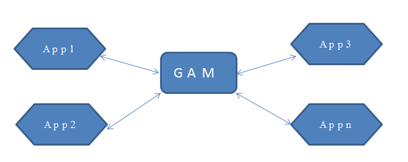
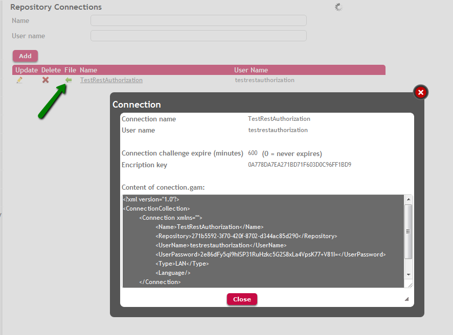

The GeneXus Access Manager Repository connection purpose is to add a security level to the GAM application. So, in order to access to the GAM application it's necessary to establish a Repository connection first, it's like having an API key.
Then, the GAM API methods execute only after the GAM Repository connection is successfully established. More than one connections can be defined for each Repository. This is particularly interesting when many Web or SD Application access the same GAM Repository. In such case, the administrator can control the access to the GAM by managing the Repository connections defined in the database.
The user associated to the Repository connection is called the GAM Connection User.
The connection data is saved in the connection.gam file, under the web directory of the GeneXus model.
1. When security is set in the Knowledge Base (Enable Integrated Security Property = Yes), or specifically, any time that a new GAM database has to
be created by GeneXus, a GAM Repository Connection is defined by default. In this case, the GAM connection user name is set by default with the name of the active version.
This information is generated by the GX IDE in the GAM DB for prototyping purposes. Nevertheless, the GAM connection user can be changed as desired before the GAM database is created (see GeneXus Administration of GAM Repository for more information).
Figure 1 shows the default Repository Connection created in the GAM DB, for a KB called "TestRestAuthorization".
2. One possible scenario is to have n applications using the same GAM Repository.

Once a GAM database has been defined, for any other environment or KB which needs to use the same GAM database you have to set existing values for Connection User Name Property and Connection User Password Property (the same as Administrator User Name Property). The best option is to define and set a different Repository Connection for each application in this case. This is for performance and security reasons.
The Repository Id property has to be the same in all KBs.
A new connection can be created using the GAM API. The GAM Web Backoffice also provides an easy way to manage Repository Connections, by clicking on the "Repository Connections" link and accessing "GAMExampleWWconnections", as shown in the figures.
Figure 2 shows the interface of "Add new GAM Repository Connection" of the GAM backend.
After the GAM Connection has been created in the GAM database, it has to be included in the connection.gam file. Figure 3 shows how to save to file the connection created. The "Connection" tag has to be copied and pasted to the existing connection.gam to add a new connection to the already existing connections. Otherwise, just create a new connection.gam with the entire XML ("ConnectionCollection" tag).

In summary:
HowTo: Using the same GAM Database by different applications
GeneXus Administration of GAM Repository
HowTo: Get and Set GAM Repository Connections
HowTo: Get GAM Repository connection information and create a connection file